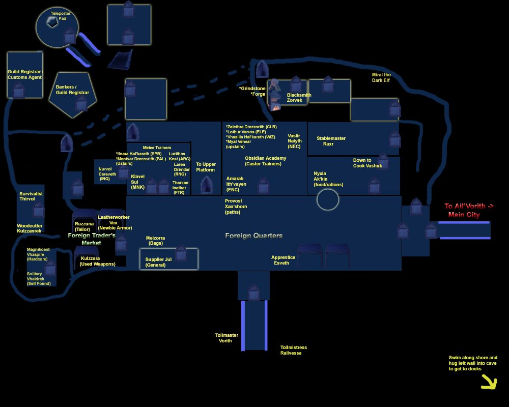
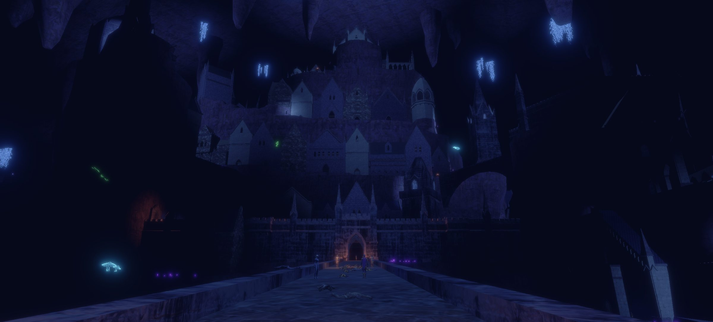

Ail'Vorith
Ail'Vorith is a main starting zone for the Deep Elf race.
Patch 0.30.2.4: devs called Ail'Vorith "a harder starting experience"; Shadowless Deep Elves get worse prices in the Foreign Quarter.
Map


Named mobs
| Named | Lvl | Race / class | Where | Known loot (hover) |
|---|---|---|---|---|
| Gloweye | 10-11 | Goblin | - | |
| The Discarded | 10+ | Undead | Ail'vorith lighthouse | Uneven Mantle |
| Glaeron Kes'tel | 10+ | Deep Elf | Ail'vorith | |
| Bubbles | 10+ | Ooze | Oozes around deep gnome researchers | Charming Talisman |
| Jerek D'shadow | 16 | Deep Elf | - | |
| Gullach Otal'qar | 16-17 | Deep Elf | Exiles camp near border of Great Cavern Sea | Gullach's Head |
| Bonescraper Zekkir | 20+ | Deep Elf | Exiles camp near border of Great Cavern Sea | Killed once, no loot |
| - | - | - |
Mobs & NPCs (camps by level)
Rows with a level are huntable camps; rows without are usually town NPCs or not yet documented.
| Name | Lvl | Race | Class | Where | Notes |
|---|---|---|---|---|---|
| a cave sporeling | 2-3 | Shroom | - | - | |
| a decayed skeleton | 2-3 | Undead | - | - | |
| a small beetle | 2-3 | Beetle | - | - | |
| a deep beetle | 3-4 | Beetle | - | - | |
| a juvenile snake | 3-4 | Snake | - | - | |
| a bubbling oozeling | 5-7 | Goo | - | - | |
| a cave myconid | 5-7 | Shroom | - | - | |
| a Deepgulp explorer | 6-7 | Goblin | Rogue | - | |
| a Deepgulp runt | 6-7 | Goblin | - | - | |
| a cultist priestess | 6-7 | Deep Elf | - | - | |
| a skeleton | 6-7 | Undead | - | - | |
| an agitated cultist | 6-7 | Deep Elf | - | - | |
| an angry cultist | 6-7 | Deep Elf | - | - | |
| a cave snake | 7-9 | Snake | - | - | |
| a separated skull | 8-11 | Skull | Enchanter | - | |
| a spectral remnant | 8-11 | Skull | Fighter | - | |
| a forsaken soul | 9-11 | Ghost | - | - | |
| a rogue elemental | 9-11 | Air Elemental | - | - | |
| a stray elemental | 9-11 | Earth Elemental | - | - | |
| a swift elemental | 9-11 | Fire Elemental | - | - | |
| a torn spirit | 9-11 | Ghost | - | - | |
| a wandering soul | 9-11 | Ghost | - | - | |
| Alarys Drezzorith | 10-11 | Deep Elf | - | Foreign Quarter | |
| Tal Drezzorith | 10-11 | Deep Elf | - | Foreign Quarter | |
| a Deepgulp hunter | 10-11 | Goblin | Archer | - | |
| a Deepgulp scavenger | 10-11 | Goblin | - | - | |
| a Deepgulp warrior | 10-11 | Goblin | Fighter | - | |
| a failed experiment | 10-11 | Goo | - | - | |
| a swift elemental | 10-11 | Elemental | - | Ail'Vorith | Fire Elemental Stone |
| a Deepgulp berserker | 12-13 | Goblin | - | - | |
| a Deepgulp mystic | 12-13 | Goblin | - | - | |
| Thanetal | 13+ | Deep Gnome | Quest NPC | Paths to Foreign Quarters from beyond cultists | Trades for Sample of Mind Control Substance |
| a floating skull | 13-15 | Skull | - | - | |
| a dark widow | >21 | Spider | - | On the ledge after the fanatics | KoS |
| a devoted priestess | >21 | Deep Elf | Cleric? | Make a left at goblin bridge | KoS |
| a fanatic cultist | >21 | Deep Elf | Necromancer | Make a left at goblin bridge | KoS |
| a fanatic warrior | >21 | Deep Elf | Fighter? | Make a left at goblin bridge | KoS |
| a fanatic watcher | >21 | Deep Elf | - | Make a left at goblin bridge | KoS |
| a predatory spider | >21 | Spider | - | On the ledge after the fanatics | KoS, invis |
| a venerated spider | >21 | Spider | - | On the ledge after the fanatics | KoS |
| an enslaved elf | 23-24 | Wood Elf | - | - | |
| a city guard | 50+ | Deep Elf | - | Guarding Inner City of Ail'Vorith | KoS to all until you prove yourself (pending changes) |
| Aleyz Ith'vayen | - | Deep Elf | - | Ail'Vorith City Interior | City Inn |
| Amarah Ith'vayen | - | Deep Elf | - | Foreign Quarter | |
| Chef Arzya | - | Deep Elf | - | Ail'Vorith City Interior | City Inn |
| Cook Vashuk | - | Deep Elf | - | Foreign Quarter | |
| Gate Captain Xaros | - | Deep Elf | - | Ail'Vorith | Last Dock before Leaving town |
| Grakkesh | - | Orc | - | Ail'Vorith City Interior | Some sort of vendor: TBD |
| Klavel Sul | - | Deep Elf | - | - | |
| Leatherworker Vex | - | Deep Elf | - | Foreign Quarter | |
| Melxura Ithvayen | - | Deep Elf | - | Ail'Vorith City Interior | City Inn |
| Melzorra | - | Deep Elf | - | - | |
| Nyxia Ak'kin | - | Deep Elf | - | Foreign Quarter | |
| Provost Xan'shorn | - | Deep Elf | - | Foreign Quarter | |
| Rogue Supply Officer | - | Deep Elf | - | Ail'Vorith City Interior | |
| Supplier Jul | - | Deep Elf | - | Foreign Quarter | |
| Toilmaster Vorith | - | Deep Elf | - | Foreign Quarter | |
| Vaslir Naiyth | - | Deep Elf | - | Foreign Quarter | |
| Vhas Ith'vayen | - | Deep Elf | Enchanter | Ail'Vorith City Interior | Located inside Enchanter House |
| Zalethra Drezzorith | - | Deep Elf | - | Foreign Quarter | |
| a Velgarrith guard | - | Deep Elf | - | - | |
| an Ail'trist patrol | - | Deep Elf | - | - | |
| an Ail'vorith citizen | - | Deep Elf | - | - | |
| an obedient gnome | - | Gnome | - | - |
Quests
| Quest | Reward | Giver | Min lvl |
|---|---|---|---|
| Ail'Vorith Starter Quest | Obsidian Shackle | Toilmaster Vorith | 1 |
| Ail'Vorith Class Quests | Various | Various | 1 |
| House Xal'tharn (Quest) | Ail'Vorith Class Quests | Klavel Sul | 8~ |
| Fungal Armor Quests | Newbie Quest Armor | Leatherworker Vex | 4 |
| House Drezzorith (Quest) | Ail'Vorith Class Quests | Zalethra Drezzorith | 8~ |
Gear that drops here
| Slot | Item | Key stats (wiki) | How to get | Lvl | Classes |
|---|---|---|---|---|---|
| Bone Chips | no stats listed on wiki | Quest: Bone Chips for Moon Dances (Moon Dances, Faelindral, min lvl 1) Quest: Bone Chips for Squire Ryland (Squire Ryland, Night Harbor, min lvl 1) Quest: Druid Starter Quest (Faelindral) (Sylvarya Starveil, Faelindral, min lvl 1) Quest: Find Delilah's Pet (Delilah, Underdocks, min lvl 1) | 1 | NEC SHD | |
| Primary, Secondary | Cracked Staff | DMG 6 / DLY 33 | Drop: A rotting skeleton (lvl 1) — Night Harbor, Noob Yard Drop: a risen skeleton (lvl 13) — Night Harbor, Crypt (Night) Drop: an ashira lookout (lvl -) — Sungreet Strand, - Drop: an ashira warrior (lvl 6-7) — Sungreet Strand, - | 1 | All classes |
| Primary | Rusty Battle Axe | DMG 10 / DLY 54 | Drop: A rotting skeleton (lvl 1) — Night Harbor, Noob Yard Drop: an ashira warrior (lvl -) — Night Harbor, Noob Yard Drop: A skeletal warrior (lvl 4 - 11) — Tomb of the Last Wyrmsbane, - Drop: a skeletal deacon (lvl -) — Tomb of the Last Wyrmsbane, - | 1 | BST FTR INQ PAL SHD |
| Primary, Secondary | Rusty Dagger | DMG 4 / DLY 24 | Vendor: A scrap dealer — Evershade Weald; A used weapons dealer — Night Harbor, Shallow Shoals; Evershade Weald Drop: an ashira warrior (lvl 6-7) — Sungreet Strand, - Drop: a Bloodynose quarreler (lvl ~8-10) — Sungreet Strand, Tel Ekir Goblin Entrance Drop: a sullen farmhand (lvl unconfirmed) — Sungreet Strand | 1 | ARC BRD BST ELE ENC FTR INQ NEC RNG ROG SHD SHM SPB WIZ |
| Primary | Rusty Long Spear | DMG 9 / DLY 48 | Drop: an ashira warrior (lvl 6-7) — Sungreet Strand, - Drop: a Bloodynose quarreler (lvl ~8-10) — Sungreet Strand, Tel Ekir Goblin Entrance Drop: an ashira lookout (lvl -) — Sungreet Strand, - Drop: an ashira shaman (lvl -) — Sungreet Strand, - | 1 | ARC BRD BST FTR INQ RNG ROG SHD SHM |
| Primary, Secondary | Rusty Scythe | DMG 4 / DLY 28 | Drop: a skeleton (lvl unconfirmed) — Shaded Dunes Drop: a bandit (lvl 10-13) — Shaded Dunes, - Drop: an ashira warrior (lvl -) — Shaded Dunes, - Drop: a wererat (lvl unconfirmed) — Shaded Dunes | 1 | BST DRU FTR INQ NEC RNG SHD SPB |
| Primary, Secondary | Rusty Spear | DMG 5 / DLY 34 | Vendor: A scrap dealer — Evershade Weald; Evershade Weald; a scrap dealer Drop: an ashira warrior (lvl 6-7) — Sungreet Strand, - Drop: an ashira lookout (lvl -) — Sungreet Strand, - Drop: a rotting skeleton (lvl unconfirmed) — Sungreet Strand | 1 | ARC BRD BST FTR INQ RNG ROG SHD SHM |
| Primary, Secondary | Rusty Trident | DMG 5 / DLY 32 | Drop: an ashira lookout (lvl -) — Sungreet Strand, - Drop: an ashira warrior (lvl 6-7) — Sungreet Strand, - Drop: a Bloodynose quarreler (lvl ~8-10) — Sungreet Strand, Tel Ekir Goblin Entrance Drop: an ashira shaman (lvl -) — Sungreet Strand, - | 1 | ARC BRD BST FTR INQ RNG ROG SHD SHM |
| Waist | Tattered Cloth Belt | AC 1 | Drop: A rotting skeleton (lvl 1) — Night Harbor, Noob Yard Drop: a cackling skeleton (lvl 15) — Night Harbor, Crypt (Night) Drop: a goblin troublemaker (lvl 9) — Night Harbor, Docks Drop: an ashira scout (lvl 2) — Night Harbor, Noob Yard | 1 | All classes |
| Feet | Tattered Cloth Boots | AC 1 | Drop: A rotting skeleton (lvl 1) — Night Harbor, Noob Yard Drop: an ashira scout (lvl 2) — Night Harbor, Noob Yard Drop: a goblin drunk (lvl -) — Night Harbor, Docks Drop: a goblin squatter (lvl 10) — Night Harbor, Docks | 1 | All classes |
| Wrist | Tattered Cloth Bracer | AC 1 | Drop: A skeletal fighter (lvl 3 - 10) — Tomb of the Last Wyrmsbane, - Drop: A skeletal warrior (lvl 4 - 11) — Tomb of the Last Wyrmsbane, - Drop: A skeletal cleric (lvl -) — Tomb of the Last Wyrmsbane, - Drop: A skeletal knight (lvl -) — Tomb of the Last Wyrmsbane, - | 1 | All classes |
| Head | Tattered Cloth Cap | AC 1 | Drop: A rotting skeleton (lvl 1) — Night Harbor, Noob Yard Drop: a goblin squatter (lvl 10) — Night Harbor, Docks Drop: a goblin troublemaker (lvl 9) — Night Harbor, Docks Drop: a goblin drunk (lvl -) — Night Harbor, Docks | 1 | All classes |
| Hands | Tattered Cloth Gloves | AC 1 | Drop: A rotting skeleton (lvl 1) — Night Harbor, Noob Yard Drop: a begrudging farmer (lvl unconfirmed) — Night Harbor Drop: a stumbling skeleton (lvl 14) — Night Harbor, Crypt (Night) Drop: a goblin drunk (lvl -) — Night Harbor, Docks | 1 | All classes |
| Neck | Tattered Cloth Gorget | AC 1 | Drop: A rotting skeleton (lvl 1) — Night Harbor, Noob Yard Drop: a goblin drunk (lvl -) — Night Harbor, Docks Drop: a goblin troublemaker (lvl 9) — Night Harbor, Docks Drop: a goblin squatter (lvl 10) — Night Harbor, Docks | 1 | All classes |
| Shoulders | Tattered Cloth Mantle | AC 1 | Drop: A skeletal fighter (lvl 3 - 10) — Tomb of the Last Wyrmsbane, - Drop: A skeletal monk (lvl -) — Tomb of the Last Wyrmsbane, - Drop: A skeletal warrior (lvl 4 - 11) — Tomb of the Last Wyrmsbane, - Drop: A skeletal defender (lvl -) — Tomb of the Last Wyrmsbane, - | 1 | All classes |
| Legs | Tattered Cloth Pantaloons | AC 1 | Drop: A skeletal fighter (lvl 3 - 10) — Tomb of the Last Wyrmsbane, - Drop: A skeletal warrior (lvl 4 - 11) — Tomb of the Last Wyrmsbane, - Drop: A skeletal defender (lvl -) — Tomb of the Last Wyrmsbane, - Drop: A skeletal cavalier (lvl 6 - 10) — Tomb of the Last Wyrmsbane, - | 1 | All classes |
| Chest | Tattered Cloth Tunic | AC 2 | Drop: A skeletal cleric (lvl -) — Tomb of the Last Wyrmsbane, - Drop: A skeletal fighter (lvl 3 - 10) — Tomb of the Last Wyrmsbane, - Drop: A skeletal warrior (lvl 4 - 11) — Tomb of the Last Wyrmsbane, - Drop: A skeletal priest (lvl -) — Tomb of the Last Wyrmsbane, - | 1 | All classes |
| Face | Tattered Cloth Veil | AC 1 | Drop: A rotting skeleton (lvl 1) — Night Harbor, Noob Yard Drop: a cackling skeleton (lvl 15) — Night Harbor, Crypt (Night) Drop: a goblin drunk (lvl -) — Night Harbor, Docks Drop: a goblin squatter (lvl 10) — Night Harbor, Docks | 1 | All classes |
| Primary, Secondary | Torch | Effect: Torch (Passive. Must Equip. Level: 1) | Quest: Pests at the Farm (Farmer Ammar, Night Harbor, min lvl 1) Vendor: A goods merchant — Night Harbor, Shallow Shoals; A greedy halfling — Night Harbor; A shifty elf — Evershade Weald Crafted: Survival (trivial X) Drop: A rotting skeleton (lvl 1) — Night Harbor, Noob Yard | 1 | All classes |
| Primary | Worn Great Staff | DMG 10 / DLY 39 | Drop: an ashira shaman (lvl -) — Sungreet Strand, - Drop: an ashira warrior (lvl 6-7) — Sungreet Strand, - Drop: a Bloodynose quarreler (lvl ~8-10) — Sungreet Strand, Tel Ekir Goblin Entrance Drop: a smarmy hunter (lvl unconfirmed) — Sungreet Strand | 1 | BST CLR DRU ELE ENC FTR MNK NEC PAL SHM SPB WIZ |
| Primary, Secondary, Range, Belt | Deep Beetle Eye | Effect: Deep Beetle Eye (Passive. Must Equip. Level: 1) | Drop: a deep beetle (lvl unconfirmed) — Deep Dune Drop: a giant deep beetle (lvl unconfirmed) — Deep Dune Drop: Fungivore (lvl unconfirmed) — Deep Dune Drop: a fungal scarab (lvl -) — Caves of Irem, - | 2 | All classes |
| Head | Tattered Rawhide Cap | AC 2 | Drop: A skeletal warrior (lvl 4 - 11) — Tomb of the Last Wyrmsbane, - Drop: A skeletal marksman (lvl -) — Tomb of the Last Wyrmsbane, - Drop: a skeletal knight (lvl -) — Tomb of the Last Wyrmsbane, - Drop: a risen zombie (lvl -) — Tomb of the Last Wyrmsbane, - | 4 | ARC BRD BST CLR DRU FTR INQ MNK PAL RNG ROG SHD SHM SPB |
| Hands | Tattered Rawhide Gloves | AC 2 | Drop: A skeletal warrior (lvl 4 - 11) — Tomb of the Last Wyrmsbane, - Drop: A skeletal priest (lvl -) — Tomb of the Last Wyrmsbane, - Drop: A skeletal marksman (lvl -) — Tomb of the Last Wyrmsbane, - Drop: a skeletal monk (lvl -) — Tomb of the Last Wyrmsbane, - | 4 | ARC BRD BST CLR DRU FTR INQ MNK PAL RNG ROG SHD SHM SPB |
| Legs | Tattered Rawhide Leggings | AC 2 | Drop: A skeletal warrior (lvl 4 - 11) — Tomb of the Last Wyrmsbane, - Drop: A skeletal monk (lvl -) — Tomb of the Last Wyrmsbane, - Drop: A skeletal defender (lvl -) — Tomb of the Last Wyrmsbane, - Drop: A skeletal priest (lvl -) — Tomb of the Last Wyrmsbane, - | 4 | ARC BRD BST CLR DRU FTR INQ MNK PAL RNG ROG SHD SHM SPB |
| Face | Tattered Rawhide Mask | AC 1 | Drop: A skeletal marksman (lvl -) — Tomb of the Last Wyrmsbane, - Drop: A skeletal warrior (lvl 4 - 11) — Tomb of the Last Wyrmsbane, - Drop: A skeletal cavalier (lvl 6 - 10) — Tomb of the Last Wyrmsbane, - Drop: a skeletal monk (lvl -) — Tomb of the Last Wyrmsbane, - | 4 | ARC BRD BST CLR DRU FTR INQ MNK PAL RNG ROG SHD SHM SPB |
| Shirt | Tattered Rawhide Vest | no stats listed on wiki | Drop: A skeletal warrior (lvl 4 - 11) — Tomb of the Last Wyrmsbane, - Drop: A skeletal knight (lvl -) — Tomb of the Last Wyrmsbane, - Drop: a skeletal priest (lvl -) — Tomb of the Last Wyrmsbane, - Drop: a skeletal defender (lvl -) — Tomb of the Last Wyrmsbane, - | 4 | ARC BRD BST CLR DRU FTR INQ MNK PAL RNG ROG SHD SHM SPB |
| Hands | Cave Mitts | AC 8, WIS +3, Mana +10 | Named drop: Bubbles (lvl 10+) — Ail'Vorith, Oozes around deep gnome researchers | 10 | ARC BRD BST CLR DRU FTR INQ MNK PAL RNG ROG SHD SHM SPB |
| Range | Charming Talisman | STA +2, CHA +2 | Named drop: Bubbles (lvl 10+) — Ail'Vorith, Oozes around deep gnome researchers | 10 | All classes |
| Primary, Secondary | Rusty Steel Trident | DMG 8 / DLY 32 | Drop: a Plagueborn watchman (lvl ~52-53) — Fallen Pass, Upper Saman Named drop: Felix Rathmere (lvl 45) — Fallen Pass, - Drop: Aidan Thrym (lvl unconfirmed) — Fallen Pass Drop: a Plagueborn housewarden (lvl ~42-44) — Fallen Pass, Elder Drake area | 42 | ARC BRD BST FTR RNG ROG SHD SHM |
| Primary | Dismembering Hammer | DMG 8 / DLY 32, STA +1, WIS +2, Mana +5 | Drop: Chief Glowgut (lvl unconfirmed) — Ail'Vorith | any / ? | BRD BST CLR DRU FTR INQ MNK PAL RNG ROG SHD SHM SPB |
| Mournful Corpse | no stats listed on wiki | Drop: a mournful outcast (lvl unconfirmed) — Ail'Vorith | any / ? | All classes | |
| Sullen corpse | no stats listed on wiki | Drop: a sullen outcast (lvl unconfirmed) — Ail'Vorith | any / ? | All classes |
Dangers
- fact Highest-level named on the wiki list: Bonescraper Zekkir (20+), Gullach Otal'qar (16-17), Jerek D'shadow (16).
- fact Monster types (wiki): Snakes, Goos, Shrooms, Skulls, Goblins, Beetles, Undead, Ghosts, Elementals, Deep Elves.
- strategy The zone spans levels 1–50, so higher mobs share the map with low ones; check con colors before pulling near the named above.
Travel (wiki)
- Underdocks via Great Cavern Sea and Caves of Irem
fact Listed in the wiki zone infobox; boat and portal stops are as written there.